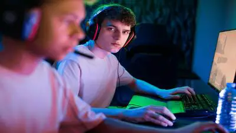

Pro Player for 100 Thieves
Currently a pro League of Legends player for the organization 100 Thieves which is based out of Los Angeles, California. Currently playing the ADC role but also interested in role-swapping to the support role if the opportunity arises.
ADC - League of Legends • Dec, 2022 — Present Since joining 100 Thieves back in December 2022, the team has achieve 2nd place in two splits out of the four splits that I have played with the team. Although we have yet to get first place in the LCS, that is still the goal that I strive to accomplish.
ADC - League of Legends • March, 2017 — Dec 2021 During my tenure on Team Liquid we were able to win 3 back to back titles in the LCS. Made a deep run at the 2019 Mid-Seasonal Invitational where we finished 2nd place.
ADC - League of Legends • October, 2015 — March, 2017 Was able to win one title in the LCS while on TeamSoloMid. Made significant progress on how to communicate while in game. This lead to me to take on shot-calling responsibilities during the later half of my employment.
Bachelor of Science, Information Technology • 2011 — 2015
High School Diploma • 2011
Streamer • October, 2015 — Present Thanks to the nature of Twitch (streaming my game play), I was able to create a brand for myself that allowed me to reach a new audience and gain sponsorship opportunities. This allowed me to create another stream of income for myself while still allowing me to practice full time on stream.
Strong Leadership Skills
Computer Knowledge
Most Valuable Player• 2016, 2018. 2019 Awarded the Most Valuable Player accolade on three separate occasions. Once on TeamSoloMid and two times on Team Liquid. Striving to achieve the same result while on 100 Thieves.
Charity Streams on Twitch • 2015 - Currently Gamers Outreach is a charity that empowers hospitalized families through play. Organized yearly fund drives and participated in fundraising events for the benefit of Gamers Outreach through Twitch Charity streams.